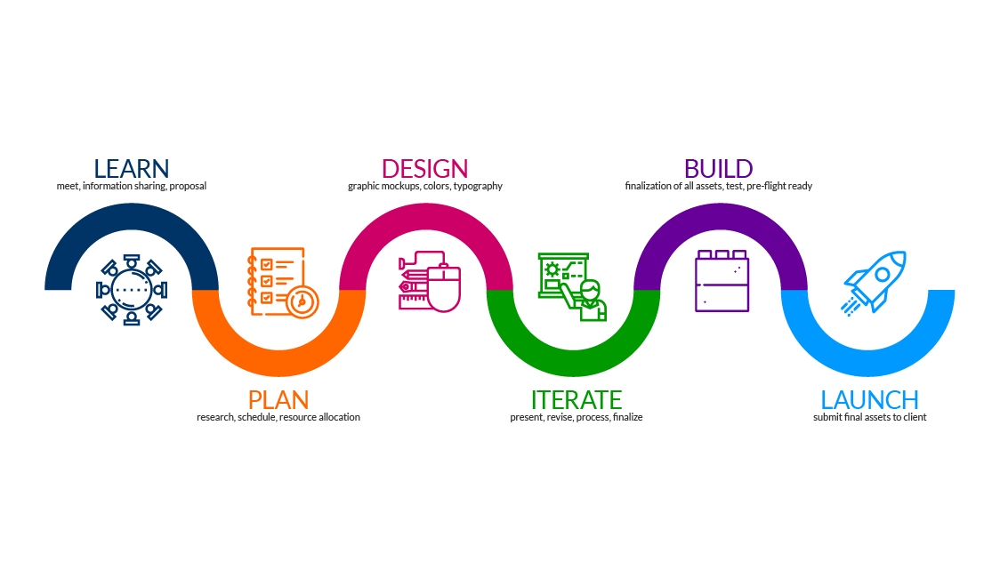
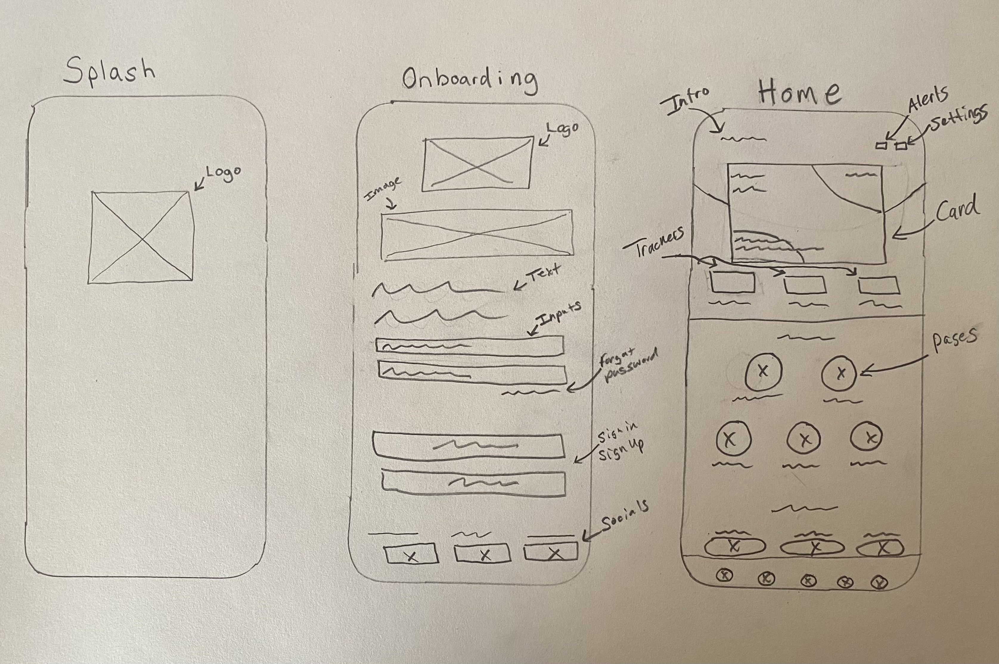
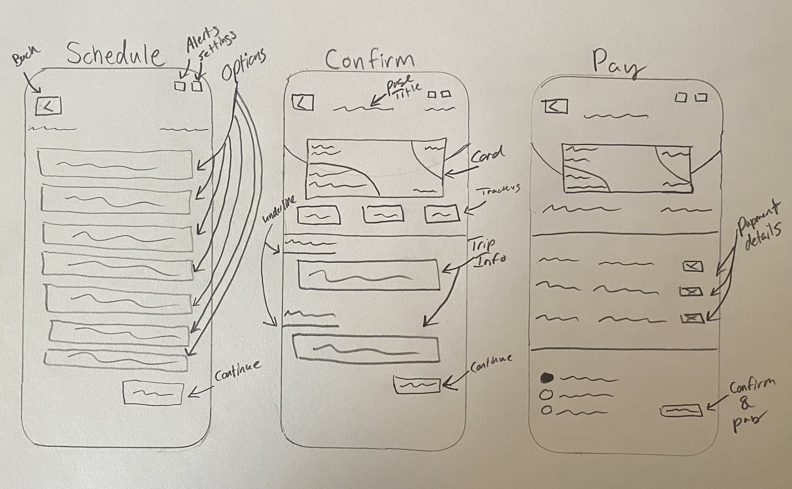
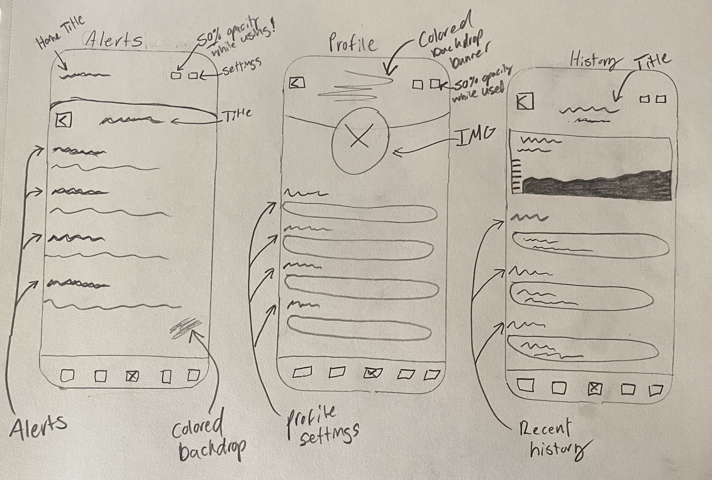

GATE-Gaming App

UI/UX Case Study Concept to eliminate the need for out-of-app facetiming while having access to a unique collection of family-friendly games!
Project Overview
GATE, the pioneering all-in-one mobile gaming app, is a game-changer for family and friend game nights, available on both Android and iOS devices. Forget the hassle of endlessly scrolling through the App Store; GATE brings a comprehensive gaming universe directly to your fingertips. Boasting a diverse selection, the app features multiplayer board games, card games, 1v1/2v2 special arcade games, vintage classics, casino delights, and GATES very own classic game remasters. It's the first mobile app to seamlessly unite all your favorite games in one application. With camera sharing during gameplay, the ability to record sessions and share highlights, and the option to send friends your streaming link, GATE provides an unparalleled gaming and social experience. Accessible through the 'live' tab, where you can watch existing friends, and join live streams from your friends list or club team, GATE ensures that the joy of gaming is shared and celebrated.
*GATE also ensures your security, only friends accepted through invite can join your list or club as well as watch your live streams*.
Problem Statement
Despite the increasing demand for virtual social experiences, the current landscape lacks a comprehensive platform that seamlessly integrates live video communication with diverse family-friendly games. Users often face fragmented interactions across various apps, hindering the potential for immersive and enjoyable virtual gatherings. This fragmented approach limits real-time connections and diminishes the overall gaming experience. To address these challenges and provide a unified solution, the development of GATE, the first-ever social gaming app, is imperative. It aims to eliminate the pain points of scattered social interactions and limited virtual family and friend activities.
Project Goals
GATES primary goal is to revolutionize the family and friend virtual gaming experience through a singular mobile application that encapsulates every capability desired by the gaming community. By seamlessly connecting an extensive array of games, providing camera sharing features, and incorporating a competitive edge with leaderboards and account levels, GATE aims to create a unified platform for gamers worldwide. The incorporation of limited edition items for top-ranking players adds an extra layer of exclusivity and achievement to the GATE gaming experience. The straightforward ranking system, where players gain or lose points based on their performance, ensures a competitive yet accessible environment.
Design Process
GATES design process followed a user-centric approach, emphasizing user research, competitive analysis, prototyping, usability testing, and iterative design refinements. The app's interface is crafted to be intuitive and engaging, seamlessly integrating video communication with gaming elements. Prototypes undergo rigorous testing with real users, ensuring the app meets user expectations and provides an enjoyable and accessible gaming and communication experience.
Project Timeline

Target Audience

Entente is designed for users of all ages who seek a fun and interactive platform to connect with family and friends. The app caters to a broad audience, fostering a sense of community through shared gaming experiences, making it an ideal choice for virtual gatherings, whether for an hour or an entire gaming session.
User Research
User research for Entente includes surveys and interviews to understand user preferences, pain points, and expectations from a social gaming app. Insights gained from this research will inform the app's features, game selection, and design choices..
Competitive Analysis

A competitive analysis is crucial to inform the app's design and features. It includes evaluating existing transit apps and similar services in the region to identify strengths, weaknesses, and opportunities. This analysis will guide the app's differentiation and the incorporation of best practices from competitors.
Observations: Survey, Google, Yelp

Quantitative Research
In the design phase of the Entente social gaming app, quantitative research is primarily focused on surveys and data analysis. Surveys will be distributed to potential users, seeking numerical responses on their preferences, expectations, and challenges related to social gaming apps. Additionally, data analytics will be employed to assess user interactions and preferences with similar existing apps, examining factors such as user reviews, ratings, and feature usage. These quantitative insights will guide the app's design choices, ensuring it aligns with user expectations and needs, even before the actual development phase begins.
Screeners
To start our first phase of user testing I had emailed them over a quick questionare (with a scale based system) to get a general idea of the level of dedication towards the product, this ensures you have the right candidates!
~ How frequently do you currently use social gaming apps?(1-10)
Person 1: (6), Person 2: (8), Person 3: (9),
~ Have you participated in live video gaming experiences before?(1-10)
Person 1: (7), Person 2: (7), Person 3: (10),
~ Is social gaming on your mobile device exciting to you?(1-10)
Person 1: (10), Person 2: (8), Person 3: (7),
~ Do you see a future need for more mobile gaming platforms?(1-10)
Person 1: (10), Person 2: (10), Person 3: (10),
~ Would you join an game invite for a mobile card/board game?(1-10)
Person 1: (6), Person 2: (7), Person 3: (9),
Empathy Map - Tara
Once I knew i had the right candidates for my user testing I gathered more inforamtion on the selected users, each having very unique lifestyles and perspectives to help us shape the best product.

Empathy Map - Luis

Empathy Map - Brett

User Persona

User Persona

User Persona

Pain Points
My final phase of research was to narrow down the most criticial issues from the overall experiance users were having. Google, Yelp, and Apple Reviews are extreamly valuable in this phase of research..

Preliminary Sketches
Once the first round of interviews (intro conversations *limited exposure) were complete I proceeded to sketch out some ideas for the mobile app. I try to usually spend about a half hour with three sessions of sketches to have different perspectives on my work when clearing my mind and refocusing on the idea. I try my best to never fall inlove with my work as perfection doesnt exist and there is ALWAYS room for improvement!


User Flow Chart

Low-Fidelity v1.0
For my first intial lofi design I focused on establishing a strong base. With a strong intial design base captivating the intent behind the "why", it becomes easier to make adjustments based of user feedback from user testing..
~ I always strive to do my best work whether it be skeches, intial designs or even just doodles!

Hi-Fidelity v1.0

User Testing - Prototype v1.0
Users were given a chance to give feedback from the intial design. In our user journey we will discuss the changes in which they found should be implemented for better UX...
User Journey 1
Once the first prototype was complete I sent it to our users for testing, here is where we collect the most essential feedback, the changes we make from here are meant to mold the project together.
~ Below are the 3 User's Journeys through our first version of our Mobile App!

User Journey 2

User Journey 3

Lo-Fidelity v2.0
Based on our users experiance reviews I was able to make the appropriate adjustments and satisy our users.. here are some of the major adjustments made..

Hi-Fidelity v2.0
Based on our users experiance reviews I was able to make the appropriate adjustments and satisy our users.. here are some of the major adjustments made..

Prototype Final Version
Once our users completed thier journey reviews I was able to get a complete idea of what i was missing, what needed to be implemented, and what major functionalities needed to stay or go..
Unique Features
~ All-in-One Gaming Hub: GATE distinguishes itself as an all-in-one gaming hub, offering a diverse array of multiplayer board games, card games, special arcade games, vintage classics, and casino delights—all within a single application. Users no longer need to switch between multiple apps, providing a unified and streamlined gaming experience.
~ Seamless Social Integration: GATE seamlessly integrates social features, allowing users to share their gaming experiences through camera sharing, session recording, and live streaming. Friends can join live streams, fostering a dynamic and connected gaming community. The app prioritizes the social aspect of gaming, enhancing the overall enjoyment for users. Competitive Edge with Leaderboards:
~ GATE introduces a robust competitive structure with leaderboards, recognizing and celebrating the skills of top-ranking players. Players can view their friends, global, and club team stats on the leaderboards, fostering healthy competition and motivation for users to improve their gaming skills.
~ Exclusive Limited Edition Rewards: To further elevate the competitive spirit, GATE offers exclusive limited edition items to the top 10 players in each country. Achieving a top-ranking position not only brings recognition but also tangible rewards, creating a unique and rewarding experience for dedicated players.
Key Takeaways
Throughout the development of Entente, several key takeaways have emerged. First and foremost, the demand for a comprehensive social gaming platform that seamlessly integrates live video communication with a diverse array of family-friendly games is substantial. Users express a clear desire for an app that fosters real-time connections, friendly competition, and a sense of community, especially during virtual gatherings. The success of Entente relies on delivering an engaging, user-friendly, and inclusive experience that resonates with users of all ages.
The integration of a point-based system and leaderboards has proven to be a significant motivator for user engagement, enhancing the overall enjoyment of the gaming experience. The importance of continuous improvement and alignment with user preferences is evident, emphasizing the need for ongoing updates and enhancements to ensure Entente remains a go-to destination for virtual social interactions.
Style Guide / Usables
Once I had an idea of how I wanted the app to be structured I began researching popular design systems and wanted to create my own based off popular features, popular layouts and styling choices.

Roadmap
* Phase 1: User Research and Conceptualization Conduct in-depth user research to understand gaming behaviors and preferences. Ideate and conceptualize the features that align with user desires. Create initial wireframes and design concepts.
* Phase 2: Prototyping and Design Refinement Develop interactive prototypes based on user feedback from initial concepts. Refine the app's design to ensure a seamless and intuitive user interface. Conduct usability testing to iterate on design elements and improve user experience.
* Phase 3: Development and Integration Begin the development of GATE's core features, including the all-in-one gaming hub, social integration, and competitive elements. Seamlessly integrate video communication, gaming elements, and leaderboards into the app. Conduct thorough testing to ensure stability and performance across different devices.
* Phase 4: Beta Testing and User Feedback Launch a beta version of GATE to a select user group for testing. Gather extensive user feedback on features, performance, and overall experience. Use insights from beta testing to make final refinements before release.
* Phase 5: Public Launch and Marketing Officially launch GATE to the public, accompanied by a strategic marketing campaign. Monitor user adoption rates and initial feedback. Implement post-launch support to address any immediate concerns or issues.
* Phase 6: Ongoing Updates and Community Building (Duration: Continuous) Commit to regular updates and enhancements based on user feedback. Actively engage with users to expand the app's features and reach.
* Phase 7: Future Development Continuously assess industry trends and emerging technologies. Plan future developments, including the introduction of new game genres, features, and engagement strategies. Stay at the forefront of the gaming landscape by adapting to evolving user expectations and technological advancements.